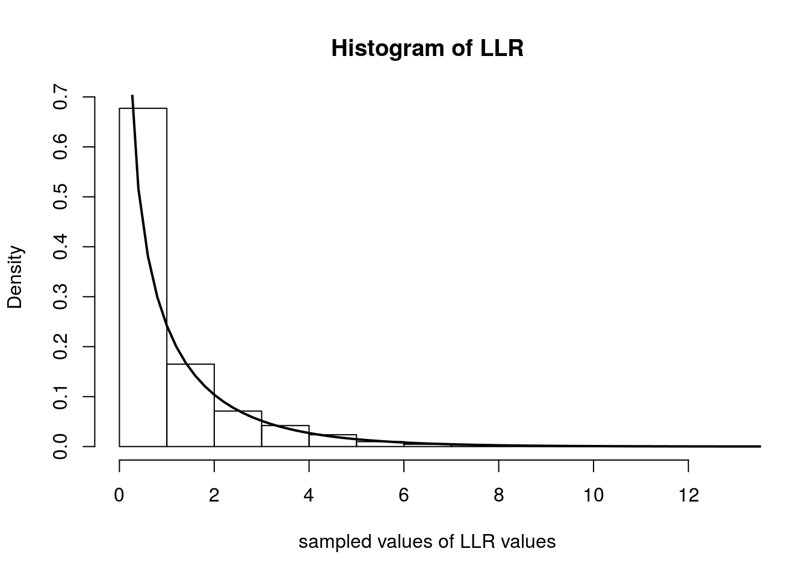

Last updated: 2017-03-06
Code version: c7339fc
This document assumes familiarity with the concepts of likelihoods, likelihood ratios, and hypothesis testing.
When performing a statistical hypothesis test, like comparing two models, if the hypotheses completely specify the probability distributions, these hypotheses are called simple hypotheses. For example, suppose we observe \(X_1,\ldots,X_n\) from a normal distribution with known variance and we want to test whether the true mean is equal to \(\mu_0\) or \(\mu_1\). One hypothesis \(H_0\) might be that the distribution has mean \(\mu_0\), and \(H_1\) might be that the mean is \(\mu_1\). Since these hypotheses completely specify the distribution of the \(X_i\), they are called simple hypotheses.
Now suppose \(H_0\) is again that the true mean, \(\mu\), is equal to \(\mu_0\), but \(H_1\) was that \(\mu > \mu_0\). In this case, the \(H_0\) is still simple, but \(H_1\) does not completely specify a single probability distribution. It specifies a set of distributions, and is therefore an example of a composite hypothesis. In most practical scenarios, both hypotheses are rarely simple.
As seen in the fiveMinuteStats on likelihood ratios, given the observed data \(X_1\ldots,X_n\), we can measure the relative plausibility of \(H_1\) to \(H_0\) by the log-likelihood ratio: \[\log\left(\frac{f(X_1,\ldots,X_n|H_1)}{f(X_1,\ldots,X_n|H_0)}\right)\]
The log-likelihood ratio could help us choose which model (\(H_0\) or \(H_1\)) is a more likely explanation for the data. One common question is this: what constitutes are large likelihood ratio? Wilks’s Theorem helps us answer this question – but first, we will define the notion of a generalized log-likelihood ratio.
Let’s assume we are dealing with distributions parameterized by \(\theta\). To generalize the case of simple hypotheses, let’s assume that \(H_0\) specifies that \(\theta\) lives in some set \(\Theta_0\) and \(H_1\) specifies that \(\theta \in \Theta_1\). Let \(\Omega = \Theta_0 \cup \Theta_1\). A somewhat natural extension to the likelihood ratio test statistic we discussed above is the generalized log-likelihood ratio: \[\Lambda^* = \log{\frac{\max_{\theta \in \Theta_1}f(X_1,\ldots,X_n|\theta)}{\max_{\theta \in \Theta_0}f(X_1,\ldots,X_n|\theta)}}\]
For technical reasons, it is preferable to use the following related quantity:
\[\Lambda_n = 2\log{\frac{\max_{\theta \in \Omega}f(X_1,\ldots,X_n|\theta)}{\max_{\theta \in \Theta_0}f(X_1,\ldots,X_n|\theta)}}\]
Just like before, larger values of \(\Lambda_n\) provide stronger evidence against \(H_0\).
Suppose that the dimension of \(\Omega = v\) and the dimension of \(\Theta_0 = r\). Under regularity conditions and assuming \(H_0\) is true, the distribution of \(\Lambda_n\) tends to a chi-squared distribution with degrees of freedom equal to \(v-r\) as the sample size tends to infinity.
With this theorem in hand (and for \(n\) large), we can compare the value of our log-likehood ratio to the expected values from a \(\chi^2_{v-r}\) distribution.
Assume we observe data \(X_1,\ldots X_n\) and consider the hypotheses \(H_0: \lambda = \lambda_0\) and \(H_1: \lambda \neq \lambda_0\). The likelihood is: \[L(\lambda|X_1,\ldots,X_n) = \frac{\lambda^{\sum X_i}e^{-n\lambda}}{\prod_i^n X_i!}\]
Note that \(\Theta_1\) in this case is the set of all \(\lambda \neq \lambda_0\). In the numerator of the expression for \(\Lambda_n\), we seek \(\max_{\theta \in \Omega}f(X_1,\ldots,X_n|\theta)\). This is just the maximum likelihood estimate of \(\lambda\) which we derived in this note. The MLE is simply the sample average \(\bar{X}\). The likelihood ratio is therefore: \[\frac{L(\lambda=\bar{X}|X_1,\ldots,X_n)}{L(\lambda=\lambda_0|X_1,\ldots,X_n)} = \frac{\bar{X}^{\sum X_i}e^{-n\bar{X}}}{\prod_i^n X_i!}\frac{\prod_i^n X_i!}{\lambda_0^{\sum X_i}e^{-n\lambda_0}} = \big ( \frac{\bar{X}}{\lambda_0}\big )^{\sum_i X_i}e^{n(\lambda_0 - \bar{X})}\]
which means that \(\Lambda_n\) is \[ \Lambda_n = 2\log{\left( \big ( \frac{\bar{X}}{\lambda_0}\big )^{\sum_i X_i}e^{n(\lambda_0 - \bar{X})} \right )} = 2n \left ( \bar{X}\log{\left(\frac{\bar{X}}{\lambda_0}\right)} + \lambda_0 - \bar{X} \right )\]
In this example we have that \(v\), the dimension of \(\Omega\), is 1 (any positive real number) and \(r\), the dimension of \(\Theta_0\) is 0 (it’s just a single point). Hence, the degrees of freedom of the asymptotic \(\chi^2\) distribution is \(v-r = 1\). Therefore, Wilk’s Theorem tells us that \(\Lambda_n\) tends to a \(\chi^2_1\) distribution as \(n\) tends to infinity.
Below we simulate computing \(\Lambda_n\) over 5000 experiments. In each experiment, we observe 500 random variables distributed as Poisson(\(0.4\)). We then plot the histogram of the \(\Lambda_n\)s and overlay the \(\chi^2_1\) density with a solid line.
num.iterations <- 5000
lambda.truth <- 0.4
num.samples.per.iter <- 500
samples <- numeric(num.iterations)
for(iter in seq_len(num.iterations)) {
data <- rpois(num.samples.per.iter, lambda.truth)
samples[iter] <- 2*num.samples.per.iter*(mean(data)*log(mean(data)/lambda.truth) + lambda.truth - mean(data))
}
hist(samples, freq=F, main='Histogram of LLR', xlab='sampled values of LLR values')
curve(dchisq(x, 1), 0, 20, lwd=2, xlab = "", ylab = "", add = T)
sessionInfo()R version 3.3.2 (2016-10-31)
Platform: x86_64-pc-linux-gnu (64-bit)
Running under: Ubuntu 14.04.5 LTS
locale:
[1] LC_CTYPE=en_US.UTF-8 LC_NUMERIC=C
[3] LC_TIME=en_US.UTF-8 LC_COLLATE=en_US.UTF-8
[5] LC_MONETARY=en_US.UTF-8 LC_MESSAGES=en_US.UTF-8
[7] LC_PAPER=en_US.UTF-8 LC_NAME=C
[9] LC_ADDRESS=C LC_TELEPHONE=C
[11] LC_MEASUREMENT=en_US.UTF-8 LC_IDENTIFICATION=C
attached base packages:
[1] stats graphics grDevices utils datasets methods base
other attached packages:
[1] knitr_1.15.1 MASS_7.3-45 expm_0.999-0
[4] Matrix_1.2-8 workflowr_0.4.0 rmarkdown_1.3.9004
loaded via a namespace (and not attached):
[1] Rcpp_0.12.9 lattice_0.20-34 gtools_3.5.0 digest_0.6.12
[5] rprojroot_1.2 mime_0.5 R6_2.2.0 grid_3.3.2
[9] xtable_1.8-2 backports_1.0.5 git2r_0.18.0 magrittr_1.5
[13] evaluate_0.10 stringi_1.1.2 tools_3.3.2 stringr_1.2.0
[17] shiny_1.0.0 httpuv_1.3.3 yaml_2.1.14 htmltools_0.3.5This site was created with R Markdown